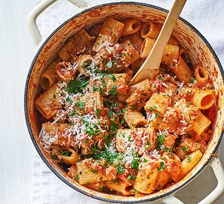

SAUSAGE RAGU

Link to Recipe from NYT (PAYWALL)
Prep time: 10mins-----Cooking time: 1hr+-----Total time: ~1.5hrs
INGREDIENTS
- 1 pound sweet Italian sausage or bulk sausage
- Extra-virgin olive oil
- 1 onion, minced
- 1 carrot, minced
- 1 celery stalk, minced
- ¼ cup minced flat-leaf parsley, plus extra for garnish
- 1 28-ounce can whole tomatoes, preferably San Marzano, with its juice
- 1 large sprig fresh thyme
- 1 large sprig fresh rosemary
- 3 tablespoons tomato paste
- Salt
- Ground black pepper
- 1 pound tubular dried pasta such as mezzi rigatoni, paccheri or penne
- Freshly grated Parmesan cheese, for garnish, optional
INSTRUCTIONS
-
-
-
-
-